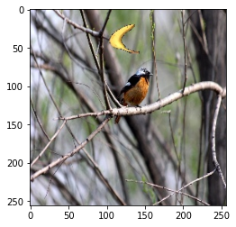
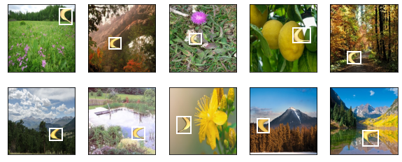

Banana Dataset
Contents
Banana Dataset¶
因為 object detection 沒有可以練習的小數據集，所以這邊 d2l 提供了一個 banana dataset 來供練習
下載和解壓縮¶
%matplotlib inline
import os
import pandas as pd
import torch
import torchvision
from d2l import torch as d2l
import matplotlib.pyplot as plt
import pandas as pd
#@save
d2l.DATA_HUB['banana-detection'] = (
d2l.DATA_URL + 'banana-detection.zip',
'5de26c8fce5ccdea9f91267273464dc968d20d72')
d2l.download_extract('banana-detection')
現在，被放在當前目錄的上一層，架構為：
data.
bana-detection.
bananas_train.
images.
0.png
1.png.
…
999.png
label.csv
bananas_val
images.
0.png
1.png.
…
99.png
label.csv
我們先快速看一下圖：
img = plt.imread("../data/banana-detection/bananas_train/images/0.png")
plt.imshow(img);

可以看到，一根香蕉出現在圖片的上面
來看一下 label 檔：
pd.read_csv("../data/banana-detection/bananas_train/label.csv")
| img_name | label | xmin | ymin | xmax | ymax | |
|---|---|---|---|---|---|---|
| 0 | 0.png | 0 | 104 | 20 | 143 | 58 |
| 1 | 1.png | 0 | 68 | 175 | 118 | 223 |
| 2 | 2.png | 0 | 163 | 173 | 218 | 239 |
| 3 | 3.png | 0 | 48 | 157 | 84 | 201 |
| 4 | 4.png | 0 | 32 | 34 | 90 | 86 |
| ... | ... | ... | ... | ... | ... | ... |
| 995 | 995.png | 0 | 171 | 101 | 214 | 147 |
| 996 | 996.png | 0 | 42 | 57 | 83 | 96 |
| 997 | 997.png | 0 | 47 | 54 | 86 | 109 |
| 998 | 998.png | 0 | 43 | 125 | 90 | 166 |
| 999 | 999.png | 0 | 191 | 99 | 249 | 152 |
1000 rows × 6 columns
可以看到 第 0 張 image，他的 label 是 0，出現的位置(bounding box) 分別是 (104, 20, 143, 58)，就和圖上看到的一樣.
這張 csv 檔可以擴充：
如果一張圖，有多個object (不管是相同or不同object)，例如 3 個 banana 和 1 個 orange，那就會重複 4 個 row，然後 label 前三個都是 0，最後一個是 1，然後 4 個座標會不同.
但作為練習，他這邊只給了一個 object: banana，而且，每張圖只會出現一個 banana
讀取¶
我們寫一個
read_data_banas函數，來讀取數據集.
def read_data_bananas(is_train=True):
"""读取香蕉检测数据集中的图像和标签
"""
data_dir = "../data/banana-detection"
csv_fname = os.path.join(data_dir, 'bananas_train' if is_train else 'bananas_val', 'label.csv')
csv_data = pd.read_csv(csv_fname)
csv_data = csv_data.set_index('img_name')
images, targets = [], []
for img_name, target in csv_data.iterrows():
cur_path = os.path.join(
data_dir,
'bananas_train' if is_train else 'bananas_val',
'images',
f'{img_name}'
)
cur_img = torchvision.io.read_image(cur_path)
images.append(cur_img)
# 这里的target包含（类别，左上角x，左上角y，右下角x，右下角y），
# 其中所有图像都具有相同的香蕉类（索引为0）
targets.append(list(target))
return images, torch.tensor(targets).unsqueeze(1) / 256
然後是 torch 的 dataset
class BananasDataset(torch.utils.data.Dataset):
"""一个用于加载香蕉检测数据集的自定义数据集"""
def __init__(self, is_train):
self.features, self.labels = read_data_bananas(is_train)
print('read ' +
str(len(self.features)) +
(f' training examples' if is_train else f' validation examples'))
def __getitem__(self, idx):
return (self.features[idx].float(), self.labels[idx])
def __len__(self):
return len(self.features)
例如這樣做：
train_dataset = BananasDataset(is_train = True)
read 1000 training examples
x, y = train_dataset.__getitem__(0)
print(x.dtype)
x_np_int = x.permute(1,2,0).detach().numpy().astype(int)
plt.imshow(x_np_int);
torch.float32

然後，y 長這樣：
print(y)
tensor([[0.0000, 0.4062, 0.0781, 0.5586, 0.2266]])
第一個 element 是他的 class label: 0, 剩下 4 個是 coordinates
最後是 torch 的 dataloader
def load_data_bananas(batch_size):
"""加载香蕉检测数据集"""
train_iter = torch.utils.data.DataLoader(BananasDataset(is_train=True),
batch_size, shuffle=True)
val_iter = torch.utils.data.DataLoader(BananasDataset(is_train=False),
batch_size)
return train_iter, val_iter
來讀讀看吧：
# training parameters
batch_size, edge_size = 32, 256
# iterator
train_iter, _ = load_data_bananas(batch_size)
# 看一個 batch
batch = next(iter(train_iter))
print(batch[0].shape)
print(batch[1].shape)
read 1000 training examples
read 100 validation examples
torch.Size([32, 3, 256, 256])
torch.Size([32, 1, 5])
來讀 10 張含有 bounding box 的影像。
我們可以看到所有這些圖片中，香蕉的旋轉角度, 大小, 位置都有所不同。
imgs = (batch[0][0:10].permute(0, 2, 3, 1)) / 255
axes = d2l.show_images(imgs, 2, 5, scale=2)
for ax, label in zip(axes, batch[1][0:10]):
d2l.show_bboxes(ax, [label[0][1:5] * edge_size], colors=['w'])
